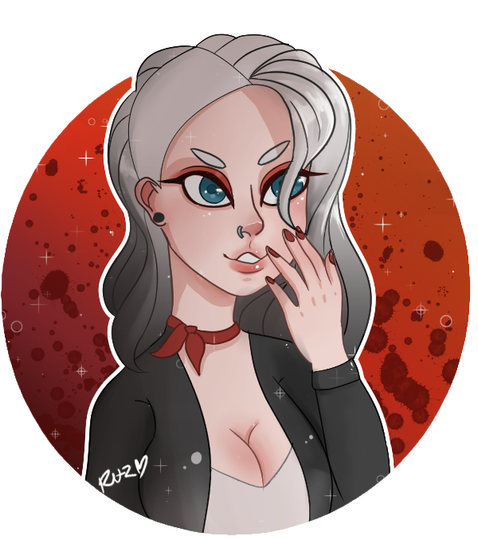
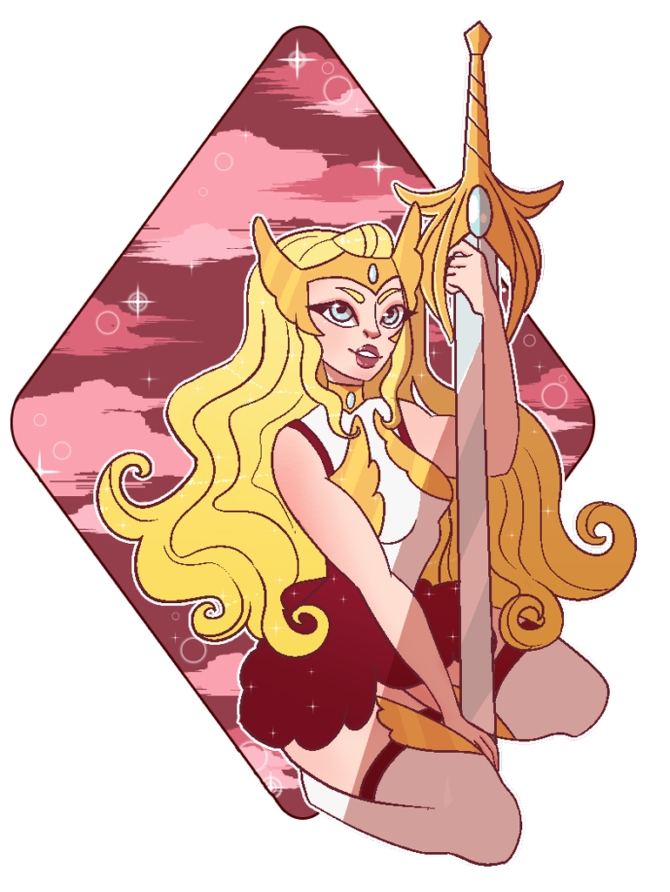
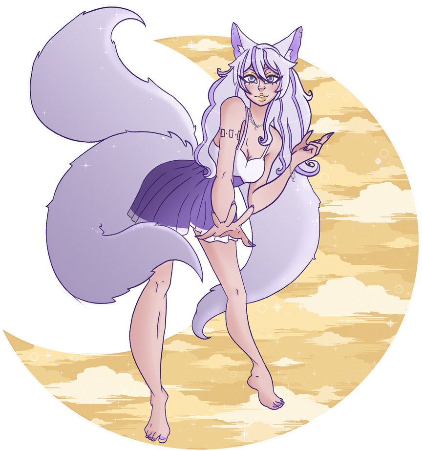
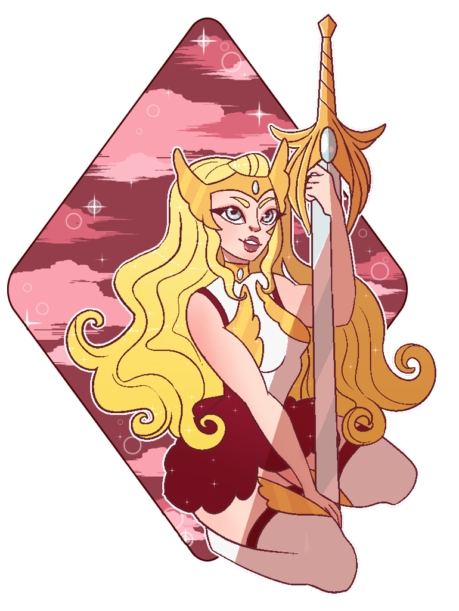
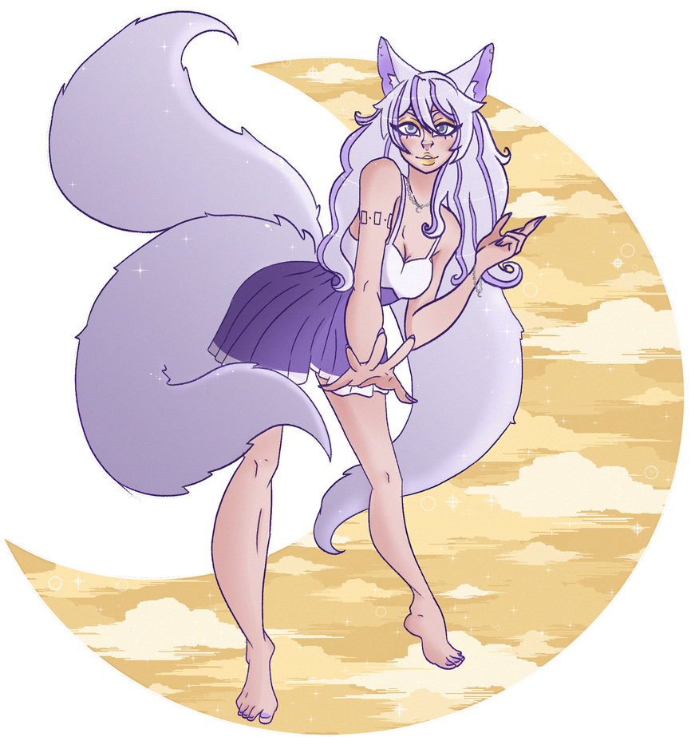

Project: Chibi Style Blinking Gifs
My Original Content
Explore my latest project,These fullbody colorful characters with chibi style are available in still image and blinking gifs. 2024


My Original Content
Explore my latest project,These fullbody colorful characters with chibi style are available in still image and blinking gifs. 2024
My Original Content
In the years 2018-2019 I was messing with a style where I used 'cutout style' backgrounds intended for sticker printing. Mostly this included circles but I would also try other shapes.


 

My Original Content
My Corpse Party Series was a set of three drawings I made back in 2020 and do use blood and depictions of violence so viewer discretion is advised. For these drawings, the source material I was inspired by was Corpse Party by Makoto Kedoin.
Original Content By kkquii @ Tumblr
Shadows can transform your art from flat to lifelike. In this tutorial, I share tips by the user kkquii on Tumblr on creating realistic shadows and improving your compositions.


Original Content by rubykgrant @ tumblr
you just gotta figure out how to do the mitten thing! (everybody does it differently, so whatever works for you)

make a little mitten shape, a bump for the big thumb muscle, a line for where you want to knuckles to be (and where the fingers end), and you can work out how the hand does hand things~

you can make them more simple or more real, however you want! hands are weird, so don’t worry if they keep looking wrong for a while, once you figure out what works for you, it’ll click. If you practice like 10 or-so basic hand shapes, you can make slight variations on all those, and 10 turns into 20 different hand poses~


Good luck, you can do it, practice until you find your groove, hands are stupid, don’t worry if they don’t look right!
Stay ahead of the curve with these emerging trends in the digital art world, from AI-generated art to the rise of mixed media techniques. In recent years, artificial intelligence has become a prominent tool in the art industry, with software like DALL-E and Midjourney enabling artists to create complex visuals with minimal input. This has sparked discussions about the role of human creativity and how AI can act as a collaborative partner rather than a replacement.
Another exciting trend is the fusion of traditional and digital media, known as mixed media art. Artists are increasingly combining digital painting with hand-drawn elements, photography, or even physical textures to produce unique, multidimensional pieces. This blend provides a tactile quality to digital art, making it feel more organic and authentic.
Additionally, the NFT (Non-Fungible Token) market has revolutionized the way digital art is bought and sold. Artists can now tokenize their work, giving them more control over distribution and the potential to earn royalties from secondary sales. While the NFT craze has stabilized, the underlying technology continues to impact the digital art community and open new opportunities for creators.
Moreover, there is a growing emphasis on accessibility and inclusivity in the digital art space. Platforms are prioritizing features that cater to diverse audiences and empower artists from different backgrounds to share their work globally. From adaptive tools for artists with disabilities to communities that amplify marginalized voices, the digital art world is evolving to be more inclusive and representative.
These trends illustrate the ever-changing landscape of digital art, making it crucial for artists to remain adaptable and open to new technologies and techniques.
Articles Refrenced: